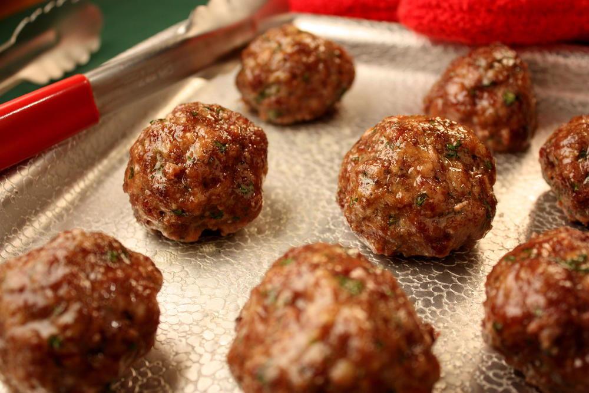

Meatballs
Here you will find out how to make delicious meatballs! Follow the simple steps below to create juicy, flavorful meatballs that are perfect for dinner, parties, or any occasion. Whether you like them with pasta, in a sub, or on their own, these meatballs are sure to delight your taste buds. Let's get cooking!
Ingredients
- 1 pound ground beef
- 1/2 cup breadcrumbs
- 1/4 cup grated Parmesan cheese
- 1/4 cup chopped parsley
- 1 egg
- 2 cloves garlic, minced
- 1 teaspoon salt
- 1/2 teaspoon black pepper
- 1/2 teaspoon dried oregano
- 1/4 cup milk

Instructions
- Preheat your oven to 400°F (200°C).
- In a large bowl, combine the ground beef, breadcrumbs, Parmesan cheese, parsley, egg, garlic, salt, pepper, oregano, and milk. Mix until well combined.
- Shape the mixture into 1-inch meatballs and place them on a baking sheet lined with parchment paper.
- Bake in the preheated oven for 15-20 minutes, or until the meatballs are cooked through and golden brown.
- Serve warm with your favorite sauce or as desired.